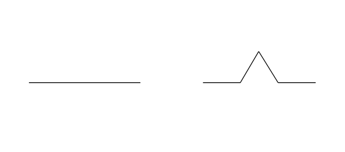
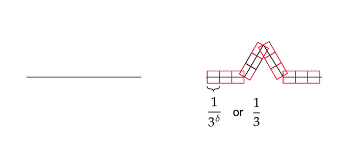
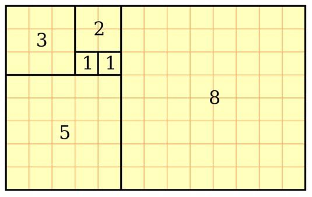
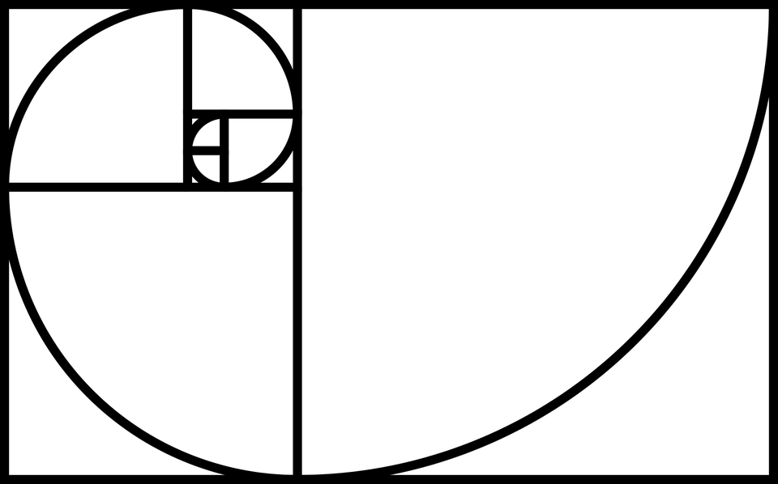

The Emergence of Order 
Ryan & James
Created: 2020-11-11 Wed 18:22
Introduction
- Looked at the emergence of patterns from natural and iterative processes.
- This lead to an investigation of fractals mostly
What are Fractals?
- Shapes with a complex structure
- Tend to exhibit self-similarity
- Although they may not!
Examples of Fractals
To motivate the concept, here are some fractals we generated in our investigation:
- Self-Similar Fractals
where:
- \(\mathbf{B}= \left[ 1 \right]\)
- \(\mathbf{Z}= \left[ 0 \right] \)
Vicsek’s Fractal

Sierpinski’s Carpet

- Can also use the Chaos Game
Sierpinski’s Triangle

- Can occur from natural phenomena like iteratively folding something:
Dragon Curve

- and sometimes thay just fall out of otherwise simple math:
\[ z \leftarrow z^{2} + c \]

- What follows is an illustration of all the points that converge to zero for values on the circle:
\[ z \leftarrow z^{2} + e^{i \frac{9k}{2}} \]

- How do we define what a fractal really is?
Box Counting Dimension
Definition
Let \(F\) be any non-empty bounded subset of \(\mathbb{R}^n\) and let \(N_\delta(F)\) be the smallest number of sets of diameter at most \(\delta\) which can cover \(F\). The lower and upper box-counting dimensions of \(F\) respectively are defined as
When the lower and upper box-counting dimensions of \(F\) are equal, then
Why use this method?
- Relatively easy to calculate
- Equal to the Hausdorff Dimension in some cases
- Can be applied to non-self similar fractals
Problems
- May not be defined if the lower and upper dimensions are not equal
- Pixel limitation with images of non-self similar fractals
Examples
- Suppose we had a square with side length 1
Use squares of side length \(\frac{1}{\delta}\) to cover this larger square
Koch Curve, a self similar fractal


First iteration is replaced by an equilateral triangle of length \(\frac{1}{3}\), leaving four line segments in total
- If we use a square of length \(\frac{1}{3^{\delta}}\) to cover the \(\delta^{th}\) iteration of the curve, there will be \(4^{\delta}\) line segments covered.

- \(N_{\delta}(F) = 4^\delta\) and \(\delta = \frac{1}{3^\delta}\)
Let \(F\) be the Koch Curve.
Defining Fractals

- This has since been rejected and is somewhat unresolved! See e.g.
- Falconer, K. J., Fractal geometry: mathematical foundations and applications
The Fractal Dimension
For ordinary shapes:
- This can be used with fractals
Fractals that are not self similar still have a constant dimension, it is the coefficient of the linear regression:
\[z \leftarrow z^2 + -0.123+0.745*i\]

By Scaling this fractal and comparing the measure and scale:

| Scale | Measure |
|---|---|
| 500 | 4834.0 |
| 563 | 5754.0 |
| 625 | 6640.0 |
| 688 | 7584.0 |
| 750 | 8418.0 |
| 813 | 9550.0 |
| 875 | 10554.0 |
| 938 | 11710.0 |
| 1000 | 12744.0 |
Dimension of 1.37 (should be 1.39).

The Fibonacci Sequence and the Golden Ratio
Motivation
- Where is the Golden ratio useful?
- How is the Golden ration obtained?
- Why are the methods to solving DE and RR similar?
Usefuleness


- Number ocurring in a wide variety of nature
- Sunflower seed heads
- Pinecones
- Tree branches
- Nautlius shells
- Spiral galaxies
- Used as a desgin technique
How it’s derived
- Ratio of two consecutive Fibonacci numbers \(\frac{F_{n+1}}{F_{n}}\) as \(n \to \infty\)
- By the Monotone Convergence Theorem the limit exists. Call this limit \(L\)
- Let \(G_n = \frac{F_{n+1}}{F_n}\)
A closed Solution for the Fibonacci Numbers
Consider the Fibonacci Sequence:
Quite similar to the following ordinary differential equation:
Let \(f(x)\) be the generating function:
Fibonacci can now be expressed as:
Which gives:
Solving the differential equation we get:
We then use the following identity:
where, if \(k > n,~~(n-k)!~~ \text{diverges} ~~ \forall k,n \in \mathrm{Z}\) by:
Applying this identity to the differential equation solution:
Equating this to \(\sum_{n=0}^\infty a_n\frac{x^n}{n!}\), we can conclude that:
Giving a final solution of:
where:
- \(\varphi = \frac{1+ \sqrt{5} }{2} \approx 1.61\ldots\)
- \(\psi = 1-\varphi = \frac{1- \sqrt{5} }{2} \approx 0.61\ldots\)